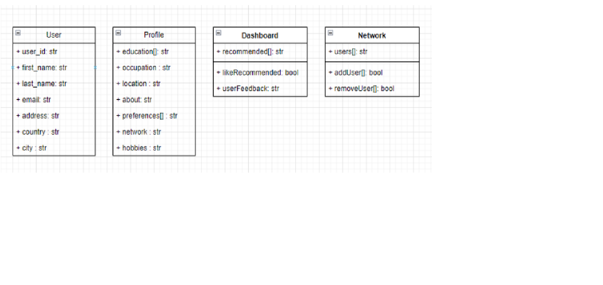

- Authors
-
WildCats( Stoleriu Mihai - Iulian, Tomescu Tudor Gabriel)
- License
-
CC-BY
Abstract
In this document, we will keep track of the development of the SoRe project, a web modular system able to
recommend certain items of interest (people, events, places, other things) according to a given knowledge graph
expressed in RDF and automatically built for a specific user.
The proposed solution will be implemented by the WildCats team. In this report you can find the architecture of
the application, the technologies used for backend and frontend, the general description of the solution and the
diagrams to exemplify the functionality
Introduction
Recommender systems play an increasingly important role in the success of social media websites. High portions of
social websites are triggered by recommendations and rely on recommendations to attract new users and maintain the
existing ones. We want to introduce a solution of a recommendation system according to a given knowledge graph
expressed in RDF.
The end-users that use this platform are individuals who interact with the application to receive personalized
recommendations.
We want a user who uses our application to find content as relevant as possible for the attributes he describes in
a profile. Based on these attributes, we will also be able to recommend other people who may have common interests
to create a better and improved recommendation network . In a dashboard, the user will be able to view the
recommendations for a topic that interests him and through an action applied to that item from the specific topic,
we will be able to filter better recommendations when revisiting that topic
At last, we want this system to become the foundation for generating insightful and personalized recommendations.
Recommendations can be a diverse array of items of a type, but inside our project we will define certain topics as
types that the user may be interested in. A list of most popular topics that people search on the web is :
News
Events ( worldwide , Sports)
Music
Movies - may include Reels ( short - form videos )
Health and Wellness
Technology and Gadgets
Lifestyle and Travel
Humor and Memes
Education and Learning
Concerning semantic web technology, OWL will be used to define a structure of knowledge.
Technologies and storage
Frontend
The angular framework will be used for the frontend due to its modular and component-based architecture.
Main Angular components are:
- authentication (login and logout)
- dashboard(list of interesting events, places and people based of user’s preferences)
- preference page (user can choose some favorite topics to get relevant recommendations from the website)
Services:
- authentication service (for user login, token retrieval (JWT Token), and token storage)
- people, events and places services (using HttpClient service for making HTTP requests)
Unit tests:
- jest testing framework, in combination with the Spectator library.
Backend
Python to define RESTful APIs regarding the recommendation system.
We can define 2 services:
An API that is used to communicate with our database, call the machine learning services, map the pages with
endpoints using Flask and a service to create a dashboard with recommended items. The machine learning service
will be created using Tensorflow library and create better recommendations for a user based on his preferences,
his network and feedback.
In order to work with SPARQL queries and RDF we will create an API that focuses on this specific tasks. The
recommended items will be available via SPARQL endpoint. We will handle the items using libraries like rdflib
(and/or owlready2 for ontology-oriented programming) . With this API we want to manage SPARQL Queries , manage
RDF data for an user and retrieve information based on user preferences considering multiple similar
features/properties.
To store RDF data we can use the Virtuoso framework in python.
Database
MongoDB to save information about our users and items that we may create if we decide to create personal data
for the items of a topic.
External datasets may be used in order to create items of interest or we can create our own date and save it in
MongoDB.
Scrapping is an alternative to retrieve social items of interests from other platforms.
Data
Data structure and representations of the data after we create an user.

Each user will be saved in MongoDB with his attributes and the list of preferences that he chose after creating
the profile. He can access the dashboard provided by our API ( we can call it SoreAPI ) to enrich the dashboard
for a topic he chose with the recommendations provided after executing the SparQL queries to retrieve the
recommended information. On the side of the page, the user will be presented with a list of his local network
where we can add/remove users . This network may be further use to enrich the recommendation process as the user
may add the users that will have common preferences as him
For enriching the feed ( dashboard ) we can use data that we create or some external data for a specific topic
provided on Kagle https://www.kaggle.com/datasets , Instagram, Facebook, etc since the platform will recommend
diverse social items of interest regarding a topic
The data that will be presented as a list in the dashboard can be of various structures, for example events and
news can have just the title and a short description as for the recommended videos we may have the thumbnail with
the video image redirecting to the youtube video ( or play it directly in the platform)
Design and architecture
The architecture is described efficiently in the next diagram. We will follow a simple flow : an actor can access
the platform with an authentication screen to register/login and after a successful secure register/login, he may
chose for himself a set of preferences based on a topic. He will be welcomed by the platform with a dashboard to
check recommended items for a topic or edit his profile preferences.
The calls are made to 2 APIs , one designed to work with RDF and SPARQL and 1 API to work with page management ,
data and flow management. For the the improvement of the system we may use a machine learning algorithm with
tensorflow to improve recommendations for an user.
The semantic SoRe API will utilize SPARQL Queries to obtain recommended items for an user based on the OWL
ontology . The ontology contains information about a certain user in order to create a graph for recommended
items.

Linked data principles
Linked Data principles according to Tim Burners Lee :
URIs for name and things 👍
Use HTTP URIs so that people can look up those names. 👍
When someone looks up a URI, provide useful information using the standards (RDF, SPARQL ) 👍
Include links to other URIs so that they can discover more things. 👍
The project uses HTTPS URIs for every page and thing on the site in order to explore and navigate on the platform.
We use URI to identify resources in our platform and use them accordingly. The resources will be accessed using
our defined APIs. We will use endpoints to access each specific resource. The information provided for a user will
be saved and expressed in OWL to define an ontology ( a preference graph for a user ) and the data will be
retrieved using SPARQL endpoints in order to provide recommended items to the user. Also when clicking on an item,
for example an event or news, we may discover more related events or news.